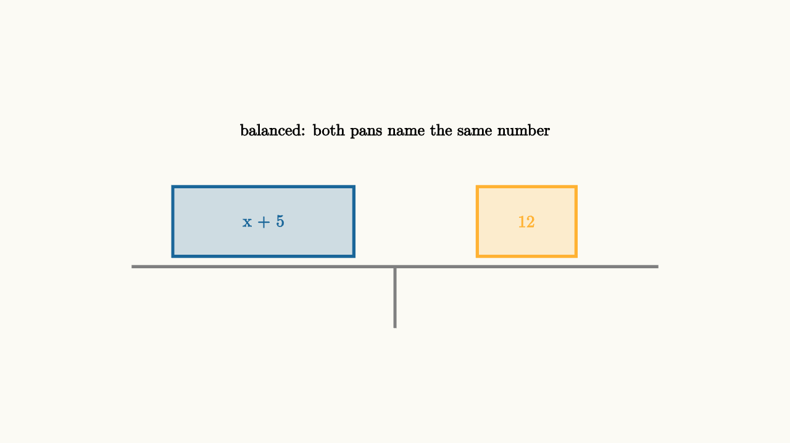
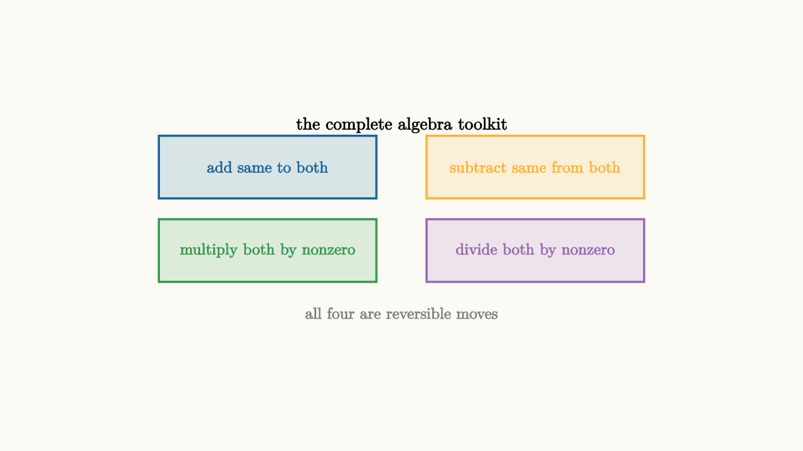

Equations Are Balanced Moves
Here is a simple puzzle. Imagine a perfectly balanced scale sitting in front of you. On the left pan you have some unknown weight hidden in a bag, plus a 5-gram metal ball. On the right pan you have a 12-gram weight. The scale is perfectly level.
Question: without ever looking in the bag, what does the bag weigh?
Most people can answer this immediately. Remove the 5-gram ball from the left pan. Balance demands that you remove the same 5 grams from the right pan. So the right side becomes 7 grams. Now the bag alone must weigh 7 grams.
That physical reasoning is exactly what algebra does. The equation
is just a written description of the balanced scale. The equal sign is the scale's beam. The two sides have to stay level. Whatever you do to one side, you do to the other, and the scale stays balanced.
This sounds too simple to bother writing down. But here is the surprising part: every single valid algebraic move in the entire course reduces to this one idea. Add the same thing to both sides. Subtract the same thing from both sides. Multiply both sides by the same nonzero number. Divide both sides by the same nonzero number. That is the complete list.
The interesting question is not what the moves are. The interesting question is which moves are reversible, and why that matters.
The Balance Beam Picture
Let's make the scale visual.

source
background = [0.985, 0.98, 0.955, 1]
camera = Camera(4.8b)
mesh diagram = block {
. stroke{GRAY, 3} Line(start: [-3.2, -0.55, 0], end: [3.2, -0.55, 0])
. stroke{GRAY, 3} Line(start: [0, -0.55, 0], end: [0, -1.3, 0])
. fill{alpha{0.2} BLUE} stroke{BLUE, 3} center{[-1.6, 0, 0]} Rect([2.2, 0.85])
. color{BLUE} center{[-1.6, 0, 0]} Text("x + 5", 0.74)
. fill{alpha{0.2} ORANGE} stroke{ORANGE, 3} center{[1.6, 0, 0]} Rect([1.2, 0.85])
. color{ORANGE} center{[1.6, 0, 0]} Text("12", 0.74)
. color{BLACK} center{[0, 1.1, 0]} Text("balanced: both pans name the same number", 0.7)
}The picture communicates the geometry of an equation. Both sides name the same quantity. The scale is not calculating anything. It is making a promise: these two expressions are equal.
Now watch what happens when we subtract 5 from the left pan.
source
background = [0.985, 0.98, 0.955, 1]
camera = Camera(4.8b)
"start"
mesh beam = stroke{GRAY, 3} Line(start: [-3.2, -0.55, 0], end: [3.2, -0.55, 0])
mesh post = stroke{GRAY, 3} Line(start: [0, -0.55, 0], end: [0, -1.3, 0])
mesh left = block {
. fill{alpha{0.2} BLUE} stroke{BLUE, 3} center{[-1.6, 0, 0]} Rect([2.2, 0.85])
. color{BLUE} center{[-1.6, 0, 0]} Text("x + 5", 0.74)
}
mesh right = block {
. fill{alpha{0.2} ORANGE} stroke{ORANGE, 3} center{[1.6, 0, 0]} Rect([1.2, 0.85])
. color{ORANGE} center{[1.6, 0, 0]} Text("12", 0.74)
}
mesh label = color{BLACK} center{[0, 1.1, 0]} Text("x + 5 = 12", 0.74)
play Write(0.8)
"subtract 5 from both"
left = block {
. fill{alpha{0.2} BLUE} stroke{BLUE, 3} center{[-1.6, 0, 0]} Rect([1.2, 0.85])
. color{BLUE} center{[-1.6, 0, 0]} Text("x", 0.74)
}
right = block {
. fill{alpha{0.2} ORANGE} stroke{ORANGE, 3} center{[1.6, 0, 0]} Rect([1.2, 0.85])
. color{ORANGE} center{[1.6, 0, 0]} Text("7", 0.74)
}
label = color{BLACK} center{[0, 1.1, 0]} Text("subtract 5 from both: x = 7", 0.74)
play Trans(1.0)Notice what we did. We removed 5 from both sides simultaneously. The scale stays balanced because both pans changed in the same way. That is the entire logic of algebra.
What "Reversible" Really Means
Here is where things get philosophically interesting, and most textbooks rush past this.
When we write
the arrow means "if the first equation holds, the second must too." That is a one-way promise.
But we can also write
The double-headed arrow means "these two equations have exactly the same solutions." That is a two-way promise. And this stronger promise is what subtracting 5 actually earns us. Subtracting 5 from both sides is reversible: if you added 5 back, you would get the original equation. So the solution sets are identical.
Why does this matter? Think about what you are actually doing when you solve an equation. You start with an equation that might be hard to read, like $3x + 2 = 11$, and you transform it into an equation that is trivial to read, like $x = 3$. For this to tell you the answer to the original problem, you need to know that every step preserved the solution set exactly. If even one step introduced a fake answer or destroyed a real one, the chain breaks.
Reversible steps are the safe ones. Each reversible step lets you write $\iff$ rather than just $\implies$.
Let's trace a complete example with this care.
Subtract 2 from both sides. This is reversible (just add 2 back):
Divide both sides by 3. This is reversible because 3 is a nonzero constant (just multiply by 3 to get back):
The beautiful consequence is that the chain can be read forward and backward. If $x = 3$, then $3x = 9$, then $3x + 2 = 11$. Every step works in both directions. No check is needed because no step opened a gap.
The Animated Solve
Let's watch a more involved problem transform step by step.
source
background = [0.985, 0.98, 0.955, 1]
camera = Camera(4.8b)
"problem"
mesh eq = block {
. color{BLUE} center{[-0.9, 0.4, 0]} Text("5 - 2(x - 4)", 0.74)
. color{BLACK} center{[0.35, 0.4, 0]} Text("=", 0.74)
. color{ORANGE} center{[1.2, 0.4, 0]} Text("17", 0.74)
}
mesh step = color{GRAY} center{[0, -0.6, 0]} Text("start here", 0.68)
play Write(0.8)
"distribute"
eq = block {
. color{BLUE} center{[-0.95, 0.4, 0]} Text("5 - 2x + 8", 0.74)
. color{BLACK} center{[0.5, 0.4, 0]} Text("=", 0.74)
. color{ORANGE} center{[1.4, 0.4, 0]} Text("17", 0.74)
}
step = color{GREEN} center{[0, -0.6, 0]} Text("distribute the -2", 0.68)
play Trans(0.9)
"combine"
eq = block {
. color{BLUE} center{[-0.7, 0.4, 0]} Text("13 - 2x", 0.74)
. color{BLACK} center{[0.35, 0.4, 0]} Text("=", 0.74)
. color{ORANGE} center{[1.2, 0.4, 0]} Text("17", 0.74)
}
step = color{GREEN} center{[0, -0.6, 0]} Text("combine: 5 + 8 = 13", 0.68)
play Trans(0.9)
"subtract 13"
eq = block {
. color{BLUE} center{[-0.5, 0.4, 0]} Text("-2x", 0.74)
. color{BLACK} center{[0.35, 0.4, 0]} Text("=", 0.74)
. color{ORANGE} center{[1.1, 0.4, 0]} Text("4", 0.74)
}
step = color{GREEN} center{[0, -0.6, 0]} Text("subtract 13 from both sides", 0.68)
play Trans(0.9)
"divide by -2"
eq = block {
. color{BLUE} center{[-0.3, 0.4, 0]} Text("x", 0.74)
. color{BLACK} center{[0.35, 0.4, 0]} Text("=", 0.74)
. color{ORANGE} center{[1.0, 0.4, 0]} Text("-2", 0.74)
}
step = color{GREEN} center{[0, -0.6, 0]} Text("divide both sides by -2", 0.68)
play Trans(0.9)Each transition is a reversible operation. The $\iff$ chain runs the full length. We know $x = -2$ is the one and only solution without any checking.
Why Division by Zero Breaks the Scale
Here is the most important exception, and it is worth thinking about carefully.
Suppose someone does this:
and then claims we can "divide both sides by zero" to get $x = 5$. But the equation $x \cdot 0 = 5 \cdot 0$ simplifies to $0 = 0$, which is true for every single value of $x$. The equation has infinitely many solutions. Dividing by zero would pretend the solution is uniquely 5, which is completely wrong.
More subtly, suppose you are solving
and you divide both sides by $(x - 3)$. You get $x = 5$. Let's check: does $x = 3$ work in the original equation?
Yes! $x = 3$ is also a solution. By dividing by $(x - 3)$, we divided by an expression that could be zero, and we lost a valid answer.
The safe approach is to never divide by a variable expression. Instead, move everything to one side:
Factor out the shared term:
Now both solutions appear cleanly: $x = 3$ or $x = 5$.
The Multiplying-by-Zero Disaster
Let's see the other direction too. What if you multiply both sides by zero?
Start with $x = 7$. Multiply both sides by zero:
True, but useless. The new equation holds for every $x$. We have completely lost the information that $x$ was supposed to be $7$. Multiplying by zero collapses all equations into the same formless truth.
So the rule is crisp: you may multiply or divide both sides by any nonzero constant. When you multiply or divide by an expression involving variables, you need to separately handle the case where that expression equals zero.
Solving Multi-Step Equations with Care
Let's work through a problem that involves multiple layers, so you can see the full rhythm.
Add 4 to both sides (reversible):
Multiply both sides by 3. Since 3 is a nonzero constant, this is reversible:
Subtract $2x$ from both sides (reversible):
Subtract 9 from both sides (reversible):
Every step is reversible. The chain is solid. We know $x = -8$ is the unique solution.
Let's verify anyway, because verification is a good habit even when the logic is airtight:
The Four-Move Algebra Toolkit
There is something elegant about how small the toolkit actually is. Every legal equation move fits into exactly four categories:
Add the same expression to both sides. Always reversible. The reverse is subtracting the same expression.
Subtract the same expression from both sides. Always reversible. The reverse is adding it back.
Multiply both sides by the same nonzero constant. Always reversible. The reverse is dividing by that constant.
Divide both sides by the same nonzero constant. Always reversible. The reverse is multiplying.
That is it. The entire symbolic machinery of solving equations comes from these four moves applied cleverly. The artistry in algebra is choosing which move to apply next so that the equation simplifies toward the form $x = \text{something}$.

source
background = [0.985, 0.98, 0.955, 1]
camera = Camera(4.8b)
mesh diagram = block {
. fill{alpha{0.15} BLUE} stroke{BLUE, 2} center{[-1.6, 0.7, 0]} Rect([2.6, 0.75])
. color{BLUE} center{[-1.6, 0.7, 0]} Text("add same to both", 0.68)
. fill{alpha{0.15} ORANGE} stroke{ORANGE, 2} center{[1.6, 0.7, 0]} Rect([2.6, 0.75])
. color{ORANGE} center{[1.6, 0.7, 0]} Text("subtract same from both", 0.68)
. fill{alpha{0.15} GREEN} stroke{GREEN, 2} center{[-1.6, -0.3, 0]} Rect([2.6, 0.75])
. color{GREEN} center{[-1.6, -0.3, 0]} Text("multiply both by nonzero", 0.68)
. fill{alpha{0.15} PURPLE} stroke{PURPLE, 2} center{[1.6, -0.3, 0]} Rect([2.6, 0.75])
. color{PURPLE} center{[1.6, -0.3, 0]} Text("divide both by nonzero", 0.68)
. color{BLACK} center{[0, 1.2, 0]} Text("the complete algebra toolkit", 0.74)
. color{GRAY} center{[0, -1.05, 0]} Text("all four are reversible moves", 0.68)
}When Steps Are Only One-Way
Not every step that simplifies an equation is reversible. This is where algebra gets careful.
Consider squaring both sides. If $a = b$, then certainly $a^2 = b^2$. That forward direction is always valid. But $a^2 = b^2$ does not force $a = b$. It only forces $|a| = |b|$, meaning $a = b$ or $a = -b$.
So squaring is a one-way move. You can use it, but then you must check your answers in the original equation. We will explore this much more deeply in essay 63 on extraneous solutions.
Similarly, taking the square root of both sides introduces the $\pm$ complication. Squaring a negative number makes it positive, so you cannot tell which sign you started with just by taking a square root.
The practical rule: if every step in your solution is reversible (add, subtract, multiply by nonzero constant, divide by nonzero constant), then your final answer is automatically the complete solution set. If any step is nonreversible, treat your final values as candidates and check each one.
The Algebra of Inequalities
Before leaving the balance metaphor entirely, let's notice that inequalities behave almost the same way, with one crucial twist.
If the scale tips left (meaning the left side is heavier), adding the same weight to both pans keeps it tipping left. Subtracting the same amount from both sides also preserves the direction. And multiplying both sides by a positive number preserves the direction.
But multiplying both sides of an inequality by a negative number flips the direction. Think physically: if you were to reflect the entire scale in a mirror, left and right swap. Multiplication by $-1$ is that mirror operation on the number line.
So for equations: add, subtract, multiply by nonzero, divide by nonzero are all valid moves.
For inequalities: add, subtract, multiply by positive, divide by positive preserve direction. Multiply by negative, divide by negative flip the inequality sign.
Divide by $-2$, and flip the sign:
The balance beam analogy still works. We just need to remember that "the same operation on both sides" includes flipping when that operation reverses direction.
Building the Habit
The goal of all this is not to make you paranoid about every step. It is to give you a model that lets you solve equations with total confidence, knowing when you need to check and when you do not.
The habit looks like this:
1. Before each step, ask: what operation am I applying to both sides? 2. Is that operation reversible (add, subtract, multiply or divide by nonzero constant)? 3. If yes, write $\iff$ and keep going. 4. If no, write $\implies$, keep going, and remember to check candidates at the end.
When every step carries a $\iff$, the final equation $x = \text{something}$ is not just a candidate. It is the guaranteed, complete answer. The balance has been maintained at every step. The scale never tipped.
That confidence is what algebra is supposed to feel like. Not a collection of tricks to memorize, but a coherent logic that you can follow, verify, and trust. The balance beam does not care about the difficulty of the problem. It only cares that both sides stay level.
source
background = [0.985, 0.98, 0.955, 1]
camera = Camera(4.8b)
"hard equation"
mesh work = block {
. color{BLACK} center{[0, 0.6, 0]} Text("3(2x - 1) + 4 = 5x + 10", 0.72)
. color{GRAY} center{[0, -0.5, 0]} Text("looks complicated", 0.68)
}
play Write(0.8)
"distribute"
work = block {
. color{BLACK} center{[0, 0.6, 0]} Text("6x - 3 + 4 = 5x + 10", 0.72)
. color{GREEN} center{[0, -0.5, 0]} Text("distribute the 3", 0.68)
}
play Trans(0.9)
"combine"
work = block {
. color{BLACK} center{[0, 0.6, 0]} Text("6x + 1 = 5x + 10", 0.72)
. color{GREEN} center{[0, -0.5, 0]} Text("combine -3 + 4 = 1", 0.68)
}
play Trans(0.9)
"subtract 5x"
work = block {
. color{BLACK} center{[0, 0.6, 0]} Text("x + 1 = 10", 0.72)
. color{GREEN} center{[0, -0.5, 0]} Text("subtract 5x from both sides", 0.68)
}
play Trans(0.9)
"subtract 1"
work = block {
. color{BLACK} center{[0, 0.6, 0]} Text("x = 9", 0.72)
. color{GREEN} center{[0, -0.5, 0]} Text("subtract 1 from both sides", 0.68)
}
play Trans(0.9)Five steps of balance-preserving moves. Each one reversible. The answer $x = 9$ is not just a guess. It is mathematically guaranteed by the chain of equivalences. That is the power the balance beam gives you.
Keep the beam in mind. Whenever you feel uncertain about an algebra step, ask one question: did I do the same thing to both sides of a balanced scale? If yes, and the operation was invertible, you are on solid ground. The mathematics will take care of the rest.